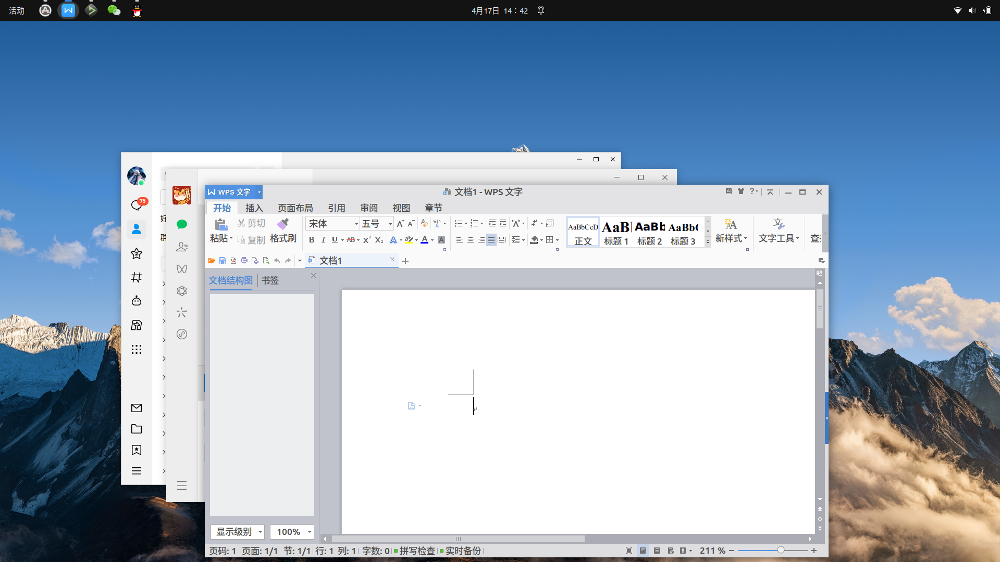

UBUNTU 工作环境打造
1.前言
选择ubuntu系统的另外一个原因就是，很多很多稳定可用的软件、解决问题的答案都是基于ubuntu系统，因此为了节约大家的时间精力，我们使用ubuntu这个稳定优先的系统。
在Ubuntu上我们一般很难获得和深度系统一样的体验，国内的一些软件并没有将其Linux的安装包同步到Ubuntu中，然而我们很多计算机实验课的教程都是基于Ubuntu系统教学，因此为了方便在Ubuntu上进行工作，现在公布一份在Ubuntu上进行优化折腾的方案。
2.方案
-
确保自己安装了Ubunru 22.04。从ubuntu官网下载镜像，并安装到自己的物理机上。
-
安装星火应用商店，并且将Ubuntu的软件源切换为阿里源或者是腾讯源。星火应用商店网址：https://spark-app.store/
- 安装原生微信Universal，并且按照星火商店中教程，替换一下托盘js文件，这样就可以做到微信后台挂载运行了。安装原生QQ，安装原生WPS, 如果不喜欢WPS的新版，可以安装WPS的旧版，这样就可以进行简单办公。常用字体可以直接去windows中的字体目录下拷贝，然后双击安装到ubuntu中即可。

- 更新自己的输入法，建议安装中州韵输入法，可定制性高，我选择使用雾凇拼音的词典，然后添加到明月拼音的词典中就可以了。
(1) 雾凇拼音的词库位置 git@github.com:iDvel/rime-ice.git
(2) 我的明月拼音的设置 git@github.com:zpxy/fcitx-rime-settings.git
-
安装星火应用商店中打包好的稻壳阅读器，可以阅读很多格式的文档，特别没有加入网页功能，只在本地运行，十分好用，对于阅读论文和文献是十分有利的
-
可以直接去virtualbox的官网下载专门给ubuntu 22.04 编译好的二进制文件，这是最快安装virtualbox的方案，我在网络上花费两天时间探索在仓库中安装virtualbox会报非常多错误，普通人根本没有一丁点儿的机会去解决这些冲突的问题，万一又给搞坏了系统就得不偿失了。
-
小tips:请不要使用铜豌豆应用商店，否则你的ubuntu将直接退化为debian12 ，并且很多软件包将会冲突，导致自己的系统搞坏。因此我们选择星火应用商店来进行中文软件的安装，并且像网易云、百度网盘这些都开发了linux版本的程序，基本上都会针对ubuntu进行适配